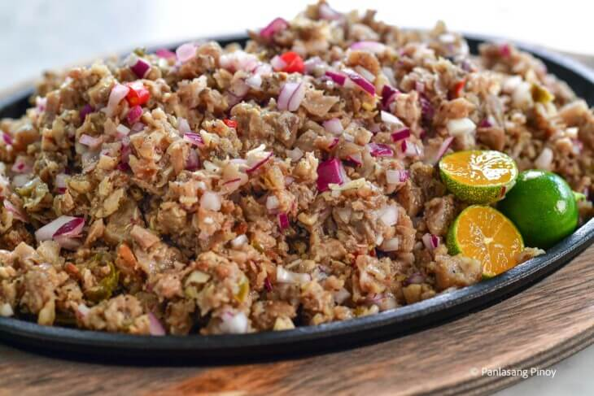

Sisig

Description
Pork sisig is a popular Filipino dish. It can be considered as a main dish or an appetizer. The composition of this dish is mainly of pig’s parts such as minced pork meat, ears, and face. Chicken liver, onions, and chili peppers are also added.
Ingredients
- Pig ears
- Pig snout
- Pork belly
- Water
- Onions
- Ginger
- Salt
- Bay leaves
- Lady's Choice Mayonnaise
- Sukang Iloko
- Black pepper
- Liver spread
- Calamansi
Steps
- Boiling the meat
- Grilling the pig parts
- Preparing the sisig dressing
- Tossing the meat and dressing together